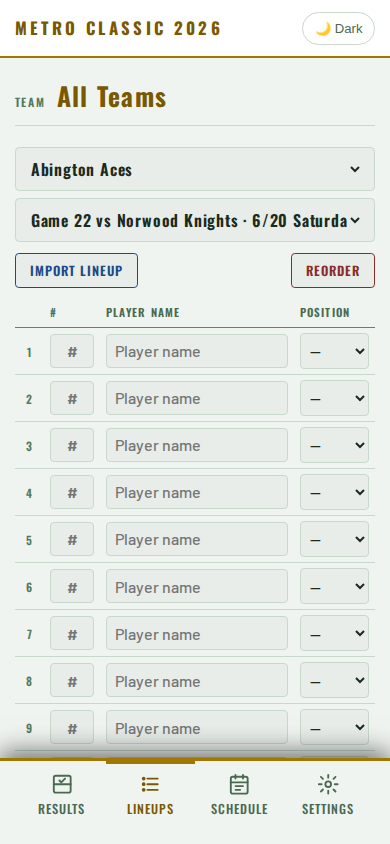
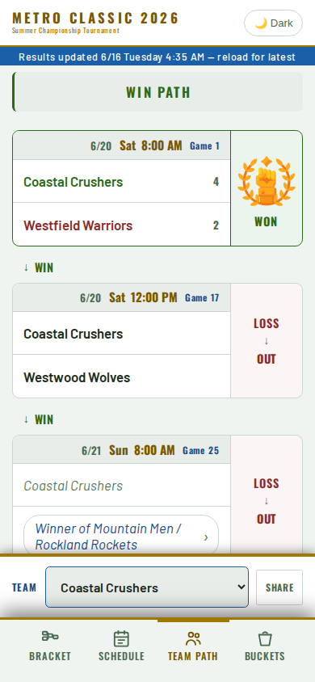
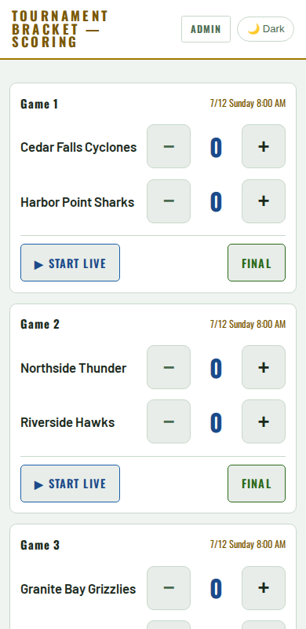
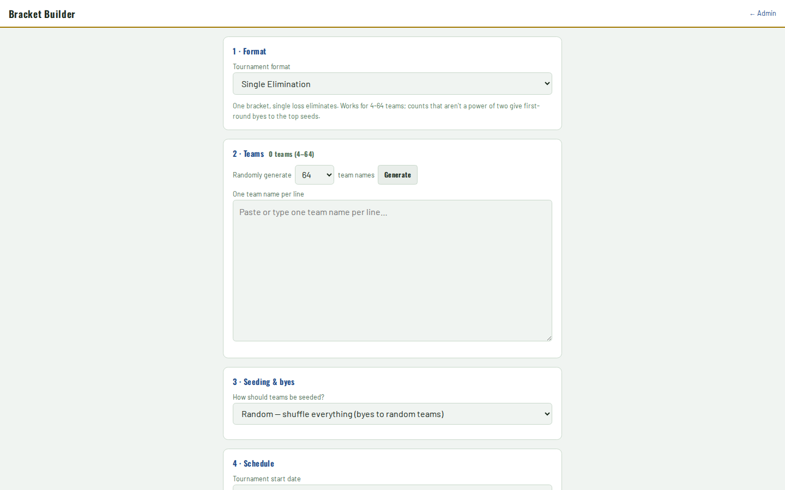

Everything your tournament needs.
The bracket is the easy part — every tool does that. The hard part is keeping everyone in sync when a game runs long, a field changes, or the lineup sheet needs to reach the dugout. That's what this is actually built for.

Live, real-time bracket
The bracket updates as results come in. A game in progress shows a ● LIVE badge with the score and inning right on its card — fans watch it change without refreshing. Tuned layouts for desktop and a swipe-through mobile view.

Lineups: a link, not a login
No more tracking down a coach for the paper lineup sheet between games. Send one team one link — no account, drop it in the team chat — and whoever's free fills it in. Columns adapt to your sport, and it locks automatically once the result is in.

Four ways to follow
Bracket, Schedule, Team Path, and Standings. Team Path lets fans jump straight to their team's road through the bracket — win path and loss path — shareable by its own link.

Field-side scorekeeper mode
A stripped-down, big-button page for scorekeepers: filter to your field, tap the score up or down, and it pushes live to every watching phone within seconds. Hit Final and the result posts itself. Built for one thumb and a chain-link fence.

Simple admin panel
Enter results, edit any game's time or field, and flip a game to live — all from your phone. Per-game save so you don't lose your place, plus an undo for the mis-clicks that happen during a live event.

Bracket Builder — nine formats
Every tool can generate a bracket, so this one does it well and gets out of the way: paste a team list and pick single or double elimination, a 3-game-guarantee format, pool play into playoffs, tiered flights, round robin, or Swiss — with byes, seeding, and a day/field schedule handled for you.
Screenshots not pictured yet: Share/Download/Print, weather delay notices, Play It Forward, the multi-tournament switcher, and Standings — see them in the live demo →
Share it instantly — not hours later
No more posting a phone photo of the bracket to Facebook after the fact. Every visitor — not just staff — can save the current bracket as an image or PDF, print it for the fence, or hand it straight to their phone's own share sheet, the moment it changes.
Weather delays, posted in one tap
Rain, a slipping schedule, a field change — post a delay banner and it shows on the public page instantly, instead of spreading by word of mouth around the parking lot. Every game also shows how far ahead or behind schedule it's running.
Play it forward — honestly
Any fan can tap a team to call them the winner and watch the bracket fill in as though it happened. Every card that changes because of a pick is watermarked "Potential Outcome" — on screen, in a saved image, and on a printout — so nobody's guess gets mistaken for a result. Picks are private to that device and never saved.
Run many tournaments at once
Host as many events as you want, each at its own clean URL
(/t/your-event). Tournament directors create and run
their own events and switch between them from one admin, with
scorekeepers and coaches granted exactly the access their event needs.
White-label to your event
Set each tournament's name, logo, accent colors, and scoring labels (Inning, Quarter, Half, Period, Set…). Light or dark theme, per viewer. It looks like your tournament, not a generic template.
Secure by default
Role-based logins, bcrypt passwords, rate-limited login, and a strict content-security policy out of the box. Works like an installable app and holds up on spotty tournament-field Wi-Fi.